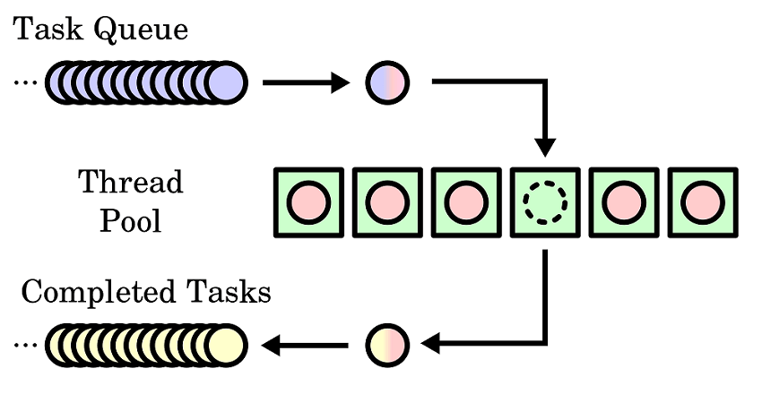
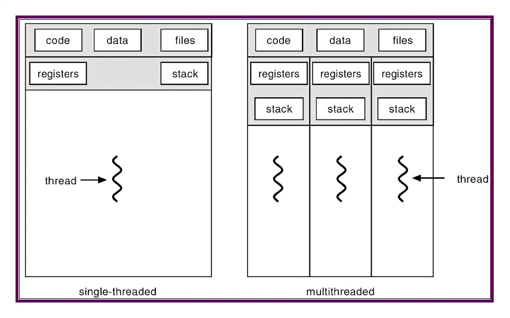

Thread Pool Cpp¶
项目来源：https://github.com/progschj/ThreadPool
项目简介：一个利用c++11标准，全平台通用的线程池简单实现
使用方法：作者将线程池封装为ThreadPool类，包含于头文件中；由于只是用c++11标准库内容，因此不需要链接任何第三方库
下面是对该项目的个人浅析：
线程池最基本的工作原理¶
本项目只包含最简单的多线程并发，不涉及异步计时器等内容

什么是多线程¶
我们知道，在我们运行C/C++程序（或称为一个 进程 ）时，程序一行一行地执行我们写下的代码；这是一种顺序结构，或者说，这是一种线性结构
显然，这样的程序意味着：我们在同一时刻只能运行一条语句；下一条语句总是在上一条语句结束之后才能发生
有时我们又希望程序在同一时刻完成多个任务。比如说：对于一个高性能的网络服务器，他肯定不能一个一个地处理客户端的请求：这样第1M个客户端的请求该等到猴年马月才能被接收。。。
面对这种情况，一个有效的解决方式就是将服务器调整为 非线性结构 ；或者简单一点说，将服务器程序变成 多条线性的结构

对于多条线性的结构的程序——多线程的程序，我们可以想象每一个线程都有各自的起点和终点，他们共享同样的数据但是各自同时对数据进行独自的加工
对于C++来说，线程就像是一条生产线：当我们配置好生产线的设备，确定好生产线的任务，并提供给这条生产线他所需要的原材料之后，就可以让他开始工作了！
std::thread t(Fn&& fn, Args... args)这条语句就创建了一个线程的实例t：
他以参数fn为设备（任务），以（可变）参数args为原材料，生产出主线程想要的“产品”
为什么需要线程池¶
按照我们之前的思路，只要我们对于每一个需要并行处理的任务，都为他创建一个线程去处理不就好了吗？为什么非得要把几个线程放到一起处理所有的请求呢？
首先，创建和销毁线程的实例需要耗费大量的CPU时间
试想一下，倘使我们程序的大部分时间都放在了创建和销毁线程的事情上，那么还会有什么时间办正事呢？
同时，当线程过多时，CPU在不同线程之间来回切换的时间也就不可忽略了；这同样造成了资源的浪费
其次，线程池有利于更好地进行任务调度
什么是任务调度呢？我们浅显理解一下：对于每一个需要并行处理的任务，可能会有 优先级 的区别；我们当然需要优先处理优先级更高的任务。这种需求线程池就可以轻松办到
还有，线程池可以让你的程序具有良好的鲁棒性
通过封装线程池，我们可以写出RAII的代码，从而减少出现 创建了线程却没有销毁的内存泄露 问题
单挑以上任何一点，都足以成为我们学习线程池的动机
既然如此，让我们开始学习C++的线程池吧！
线程池的简单实现¶
开源项目 https://github.com/progschj/ThreadPool 利用C++11写出了一个精巧易懂的线程池实现，并具有良好的扩展性，成为我们学习的基础
源码如下（thread_pool.h）：
#ifndef THREAD_POOL_H
#define THREAD_POOL_H
#include <condition_variable>
#include <functional>
#include <future>
#include <memory>
#include <mutex>
#include <queue>
#include <stdexcept>
#include <thread>
#include <vector>
这是引用的头文件，其中condition_variable（条件变量）、future（异步地获取运行结果）、mutex（为了访问共享内存而设置的锁🔒）、thread（包含线程类的文件）
class ThreadPool {
public:
ThreadPool(size_t);
template <class F, class... Args>
auto enqueue(F &&f, Args &&...args)
-> std::future<typename std::result_of<F(Args...)>::type>;
~ThreadPool();
private:
// need to keep track of threads so we can join them
std::vector<std::thread> workers;
// the task queue
std::queue<std::function<void()>> tasks;
// synchronization
std::mutex queue_mutex;
std::condition_variable condition;
bool stop;
};
这里定义了线程池的结构：它拥有 一组线程 ，一个 任务队列 ，一个 互斥锁 ，一个“唤醒线程”的 条件变量 和条件2
// the constructor just launches some amount of workers
inline ThreadPool::ThreadPool(size_t threads) : stop(false) {
for (size_t i = 0; i < threads; ++i)
workers.emplace_back([this] {
for (;;) {
std::function<void()> task;
{
std::unique_lock<std::mutex> lock(this->queue_mutex);
this->condition.wait(
lock, [this] { return this->stop || !this->tasks.empty(); });
if (this->stop && this->tasks.empty())
return;
task = std::move(this->tasks.front());
this->tasks.pop();
}
task();
}
});
}
这是线程池的构造函数，调用它我们就可以创建一个线程池的实例
通过传入的参数threads，我们可以限制线程的总数；在互斥锁的保护下，某条线程从任务队列中取出任务，并执行之
// add new work item to the pool
template <class F, class... Args>
auto ThreadPool::enqueue(F &&f, Args &&...args)
-> std::future<typename std::result_of<F(Args...)>::type> {
using return_type = typename std::result_of<F(Args...)>::type;
auto task = std::make_shared<std::packaged_task<return_type()>>(
std::bind(std::forward<F>(f), std::forward<Args>(args)...));
std::future<return_type> res = task->get_future();
{
std::unique_lock<std::mutex> lock(queue_mutex);
// don't allow enqueueing after stopping the pool
if (stop)
throw std::runtime_error("enqueue on stopped ThreadPool");
tasks.emplace([task]() { (*task)(); });
}
condition.notify_one();
return res;
}
这段代码展示了如何向线程池的任务队列中添加一个新的任务：通过std::packaged_task、std::future、std::forward等晦涩的语法，将任务对象放到队列中等待执行；并通过条件变量通知其他线程“有任务来了！！！”
此时，其他线程终于结束了等待（condition.wait方法），开始工作
// the destructor joins all threads
inline ThreadPool::~ThreadPool() {
{
std::unique_lock<std::mutex> lock(queue_mutex);
stop = true;
}
condition.notify_all();
for (std::thread &worker : workers)
worker.join();
}
#endif
线程池的销毁过程：依据RAII思想，Resource Acquisition Is Initialization，当对象的生命周期结束后自动销毁该对象的内存空间
体现在这里就是将所有子线程join进主线程
至此，一个线程池的基本功能就全部完成了
如何使用¶
项目中附赠了一个简单的示例代码，帮助人们使用线程池
#include <chrono>
#include <iostream>
#include <vector>
#include "thread_pool.h"
int main() {
ThreadPool pool(4);
std::vector<std::future<int>> results;
for (int i = 0; i < 8; ++i) {
results.emplace_back(pool.enqueue([i] {
std::cout << "hello " << i << std::endl;
std::this_thread::sleep_for(std::chrono::seconds(1));
std::cout << "world " << i << std::endl;
return i * i;
}));
}
for (auto &&result : results)
std::cout << result.get() << ' ';
std::cout << std::endl;
return 0;
}
在这份示例代码中，作者创建了一个拥有四个线程的线程池，并且向任务队列中拢共放了8个任务
后记¶
- 我们分配多少线程最合适？一般来说，为了充分利用CPU的并发能力，我们线程数应该和CPU核数相当；这样每个CPU核可以单独处理一件任务。（电脑配置说的几核几线程到底是什么意思？谢谢? - 知乎）
- 如何控制任务的优先级？通过阅读代码我们可以知道，我们使用队列来存储所有任务；那么，如果我们可以定义人物的优先级，那么就可以使用优先队列来进行优化。事实上，许多算法可以通过优先队列进行优化
- 互斥量（mutex）是什么？首先我们知道，所有线程共享进程中的数据，因此在并行过程中，可能出现两个线程同时访问同一个内存地址；若两个内存都只进行读操作还好，可当某个线程进行写操作时，无疑影响了另一个线程的结果。通过加锁，我们可以保证每个时刻至多有一个线程对数据进行操作